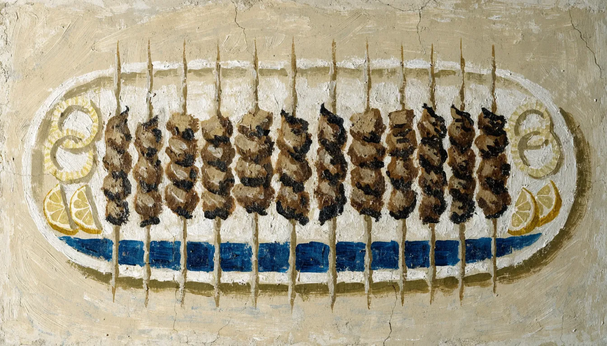
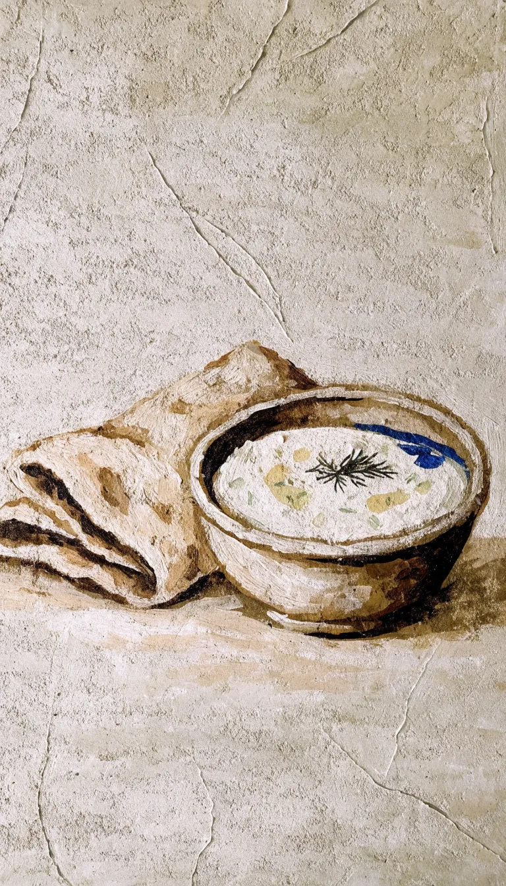

Mittags
Mittagstisch, Dienstag bis Sonntag ab 12 Uhr.
Gyros, Pommes, Salat, Tzatziki. Was mittags auf den Tisch kommt, sagen wir Ihnen auch gern am Telefon.

Mittagstisch, Dienstag bis Sonntag ab 12 Uhr.
Gyros, Pommes, Salat, Tzatziki. Was mittags auf den Tisch kommt, sagen wir Ihnen auch gern am Telefon.

Drinnen auf der Bank oder draußen auf der Terrasse. Dazu Bier oder Wein, zum Schluss Kaffee und Dessert.
Tisch reservieren unter 040 38663487.

Die vollständige Karte liegt im Lokal aus. Fragen Sie gern telefonisch nach: 040 38663487.

KI-Bild

Dienstag bis Samstag von 12 bis 21 Uhr, sonntags bis 20 Uhr. Montags bleibt die Küche kalt.
Anrufen, bestellen, abholen.
Gyros zum Mitnehmen? Anrufen, kurz sagen, was es sein soll, und im Wacholderweg abholen. Das geht zu den Öffnungszeiten, Dienstag bis Sonntag ab 12 Uhr.

KI-BildDraußen gibt es Plätze auf der Terrasse. Für die Grillplatte zu zweit oder größere Runden lieber vorher einen Tisch reservieren: 040 38663487.